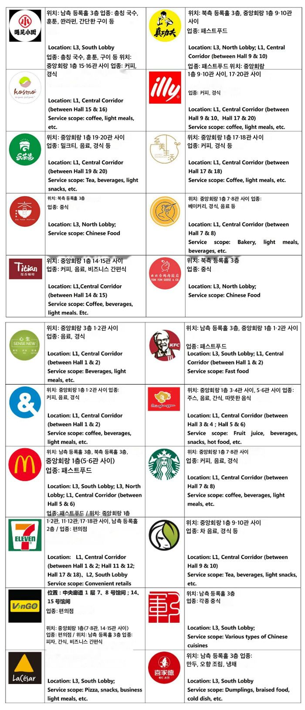

관내 식음료
선전 국제회의전시센터는 다양한 식음료 시설을 갖추고 있습니다. 식음료 공간은 5.1만㎡가 넘고(중앙주방 1.5만㎡ 이상), 건강하고 안전한 중식·양식부터 다과, 패스트푸드까지 제공합니다.
전시홀 식당가: 1~17관 3층에 모두 있습니다. 포장 구역: 1~17관 2층에 모두 있습니다.
레스토랑: 두 등록홀 3층에 중식당과 다양한 특색 식당이 있습니다.
간단한 식음료: 20관 1·2층에 각각 2개의 서비스 카운터가 있고, 중앙 회랑 1층에 여러 캐주얼 매장이 있습니다.
